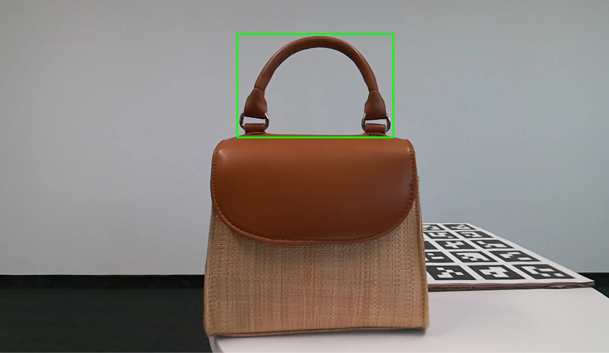

Sep 09, 2024 - 7 Min Read
Lan-Grasp: Revolutionizing Object Grasping With Large Language Models
This year, the Complexity 72h workshop, in association with ISI Foundation, CNRS, Carlos III University of Madrid, and Northeastern University London, will host a scientific study that will take place during the workshop itself.
Over the last 15 years, the SocioPatterns collaboration led by ISI Foundation (Turin, Italy) and the Aix-Marseille University (Marseille, France) has developed wearable proximity sensors to assess proximity of individuals, carrying out measurements in over 12 countries, engaging more than 50,000 participants, in contexts that spanned hospitals, primary schools, high-schools, social gathering conferences, households, including various environments in low and middle income countries in Africa. The data released by the collaboration have been used in over 2,000 scientific papers in domains that span network science, computational epidemiology, computational social science, and more.
The Complexity 72h workshop will deploy the SocioPatterns setup during its 5th edition in Madrid. The goal is to further understand the characteristics and the dynamics of face-to-face interactions between individuals within this unique context. The setup of this study is straightforward and participant-friendly. Each individual who consents to participate will receive a small sensor, which will be attached to their badge for the duration of the workshop. These sensors are designed to detect other nearby sensors, facilitating the privacy-conscious collection of data on face-to-face interactions between participants. It is important to note that no other signals, such as sound, will be recorded. Optionally, participants will be able to share additional information about themselves, including gender, academic title, field of research, nationality, and previously known workshop participants. Such information is extremely valuable as it allows for deeper studies of the mechanisms by which people meet and join forces. Along this line, additional surveys will also be deployed through a web application, specifically designed to gather context-specific information regarding the dynamics and interactions within the team, offering further insights into the mechanisms of collaboration.

Over the last 15 years, the SocioPatterns collaboration led by ISI Foundation (Turin, Italy) and the Aix-Marseille University (Marseille, France) has developed wearable proximity sensors to assess proximity of individuals, carrying out measurements in over 12 countries, engaging more than 50,000 participants, in contexts that spanned hospitals, primary schools, high-schools, social gathering conferences, households, including various environments in low and middle income countries in Africa. The data released by the collaboration have been used in over 2,000 scientific papers in domains that span network science, computational epidemiology, computational social science, and more.

.png)